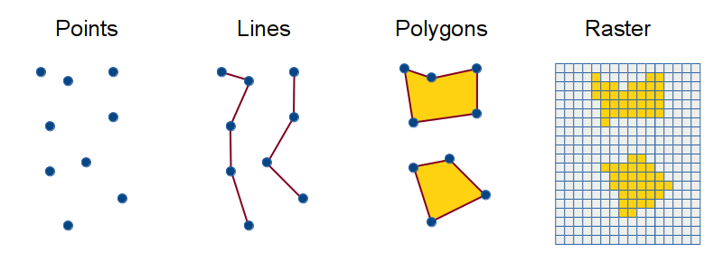
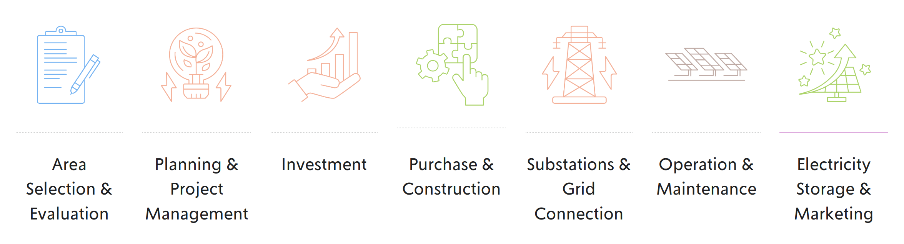
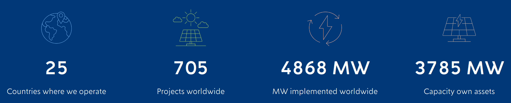
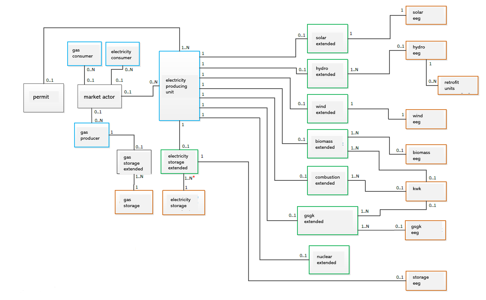

Building Geodata-Pipelines for the Solar Industry
Internship Report
Joaquin Gottlebe 24.04.2026
Basics: Geographic Information (Geodata)

| id | name | category | elevation_m | geometry |
|---|---|---|---|---|
| 1 | Berlin Center | city | 34 | POINT(13.4050 52.5200) |
| 2 | Potsdam Station | transport | 38 | POINT(13.0657 52.3914) |
| 3 | Forest Plot A | sample_site | 72 | POINT(12.9876 52.4123) |
| 4 | Lake View | observation | 29 | POINT(13.1025 52.4568) |
| 5 | Weather Sensor 01 | sensor | 45 | POINT(13.2211 52.3347) |
Minn, Michael. Visualizing Terrain in ArcGIS Pro. https://michaelminn.net/tutorials/arcgis-pro-terrain/
Data and information which has an association with a location relative to Earth
Basics: Geographic Information Systems (GIS)

Consists of integrated computer hardware and software that store, manage, analyze, edit, output, and visualize geographic data.
©OpenStreetMap contributors
Internship Overview
Company: Enerparc AG
Industry domain: Solar industry
Duration: 360 hours over 4 months
Role: GIS Developer
My Background
Bachelor in Geography
Specialised in Remote Sensing and Geographic Information Systems
4 years of experience in tutoring RS/GIS
Currently pursuing Master in Computational Science
Motivation
First industry experience
How to handle geodata pipelines?
How is the dev experience in a non-tech company?
Enerparc Expertise
ENERPARC AG is involved in every stage of solar energy projects, acting as both a project developer, operator and a service provider for third parties.

ENERPARC AG. https://www.enerparc.de
Enerparc in numbers

Covers the electricity needs of 1.2 million households
ENERPARC AG. https://www.enerparc.de
Enerparc Solar Parcs in Germany
ENERPARC AG. https://www.enerparc.de/en/projects#solar-parks-germany
My Team
Project Development: GIS Development & Administration
4 Persons: 1 Team lead, 1 Full time, 2 Working Students
Problem Statement
Use casesIdentification of development possibilities
Monitoring of market activity
NeededDaily updated geodata on energy assets of Germany
ApproachA process where geodata is periodicaly extracted from an input source, transformed with buisness logic, and loaded into a geodatabase. (ETL)
Input Source
Is an official registry of all facilities and units in the German energy system. It is maintained by the Bundesnetzagentur.

Output Destination

Extraction Methods
| Methods | Advantage | Disadvantage |
|---|
| Simple Object Access Protocol (SOAP) |
| Bulk download (ZIP) |
Transformation Methods
Loading Methods
"Those who do not understand SQL are condemned to reinvent it, poorly."
Adapted from Henry Spencer